※11月28日(四) 18:30圖片修正
◆「聖誕節2019Pick Up召喚(每日交替)」期間◆
期間:2019年11月27日(三) 17:00～12月11日(三) 11:5911月28日(四) 18:30～12月12日(四) 11:59
舉辦期間限定「聖誕節2019Pick Up召喚(每日交替)」！
於期間限定活動「聖誕節2019 南丁格爾的聖誕頌」活躍的期間限定從者「★5(SSR)阿斯托爾福(Saber)」新登場！
本次包含上述Pick Up 7位從者！
「★5(SSR)南丁格爾(Berserker)」「★4(SR)馬嘶」「★4(SR)童謠」以每日交替Pick Up，「★5(SSR)阿斯托爾福(Saber)」「★3(R)蓋烏斯・尤利烏斯・凱撒」「★3(R)布狄卡」「★3(R)大流士三世」常駐Pick Up！
「★5(SSR)乙女たちの午餐会」「★4(SR)想いの配達人」「★3(R)ウィズ・マイ・ファミリー」做為期間限定概念禮裝登場！！
裝備上述3種概念禮裝的話，在期間限定活動期間限定活動「聖誕節2019 南丁格爾的聖誕頌」中會提升活動道具的掉落獲得數。
Pick Up期間中，Pick Up對象從者與概念禮裝的出現機率提升！
詳情請在聖晶石召喚畫面左下的召喚詳細確認。
11次召喚中確定1張★4(SR)以上和確定1位★3(R)以上的從者！ ※確定★4(SR)以上包含從者和概念禮裝。 ※本頁面皆為開發中圖片。會有與實際圖片相異的情況。
◆有關從者的注意◆
※請注意「聖誕節2019Pick Up召喚(每日交替)」做為每日交替，「★4(SR)馬嘶」就算Pick Up期間中也會有不被抽出的日子。
※「★5(SSR)阿斯托爾福(Saber)」在Pick Up期間結束後不會追加到故事召喚。
※Pick Up期間中，「★4(SR)馬嘶」就算通過各章前也能入手。
※「★5(SSR)南丁格爾(Berserker)」「★4(SR)馬嘶」「★4(SR)童謠」「★3(R)蓋烏斯・尤利烏斯・凱撒」「★3(R)布狄卡」「★3(R)大流士三世」在Pick Up期間結束後仍會在故事召喚被抽出。
◆有關概念禮裝的注意◆
※「★3(R)ウィズ・マイ・ファミリー」在Pick Up期間中，也能靠友情點數召喚獲得。
※請注意自友情點數召喚抽出的「★3(R)ウィズ・マイ・ファミリー」在自動變還設定登錄★3(R)概念禮裝的情況，會變成自動變還的對象。
◆「聖誕節2019Pick Up召喚(每日交替)」Pick Up內容◆
| Pick Up期間 | Pick Up內容 | |
|---|---|---|
| 全天Pick Up | 每日交替Pick Up | |
| 11/27(三) 17:0011/28(四) 18:30～ 11/29(五) 22:59 |
★5 阿斯托爾福(Saber) ★3 蓋烏斯・尤利烏斯・凱撒 ★3 布狄卡 ★3 大流士三世 |
★4 馬嘶 ★4 童謠 |
| 11/29(五) 23:00～ 12/2(一) 22:59 |
★5 南丁格爾(Berserker) ★4 馬嘶 ★4 童謠 |
|
| 12/2(一) 23:00～12/3(二) 22:59 | ★4 童謠 | |
| 12/3(二) 23:00～12/4(三) 22:59 | ★4 馬嘶 | |
| 12/4(三) 23:00～12/5(四) 22:59 |
★4 馬嘶 ★4 童謠 |
|
| 12/5(四) 23:00～12/6(五) 22:59 |
★5 南丁格爾(Berserker) ★4 童謠 |
|
| 12/6(五) 23:00～12/7(六) 22:59 |
★5 南丁格爾(Berserker) ★4 馬嘶 |
|
| 12/7(六) 23:00～ 12/9(一) 22:59 |
★4 馬嘶 ★4 童謠 |
|
| 12/9(一) 23:00～ 12/11(三) 11:59 |
★5 南丁格爾(Berserker) ★4 馬嘶 ★4 童謠 |
|
※請注意會以每日交替變更Pick Up的從者。


 ※上述「★5(SSR)阿斯托爾福(Saber)」的卡面為靈基再臨第3階段。
※上述「★5(SSR)阿斯托爾福(Saber)」的卡面為靈基再臨第3階段。
 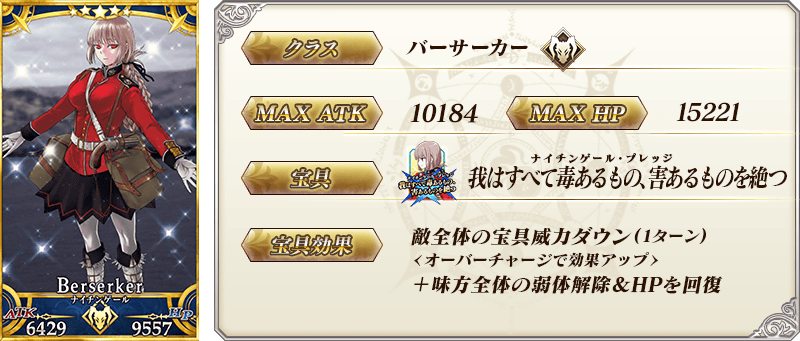
※上述「★5(SSR)南丁格爾(Berserker)」的卡面為靈基再臨第2階段。
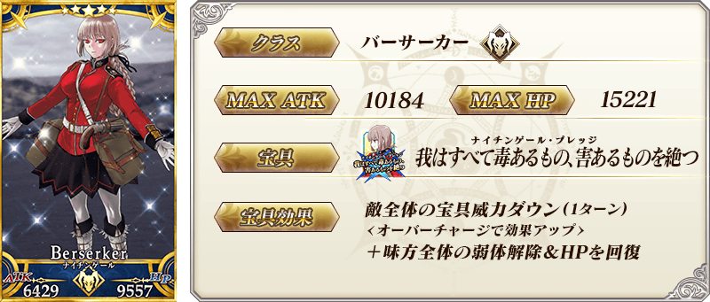
※上述「★5(SSR)南丁格爾(Berserker)」的卡面為靈基再臨第2階段。
 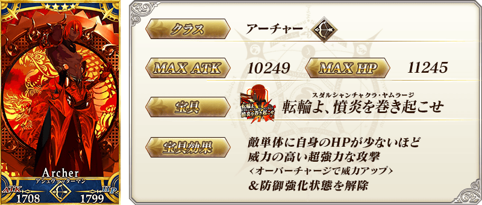
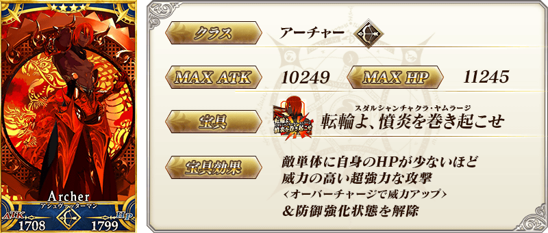
 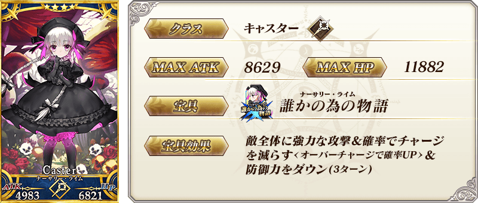
※上述「★4(SR)童謠」的卡面為靈基再臨第2階段。
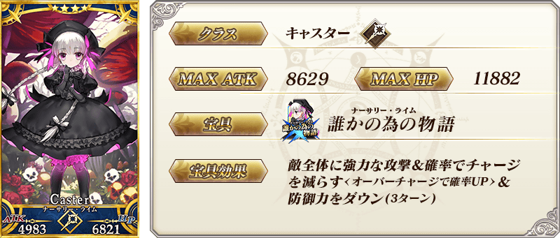
※上述「★4(SR)童謠」的卡面為靈基再臨第2階段。
 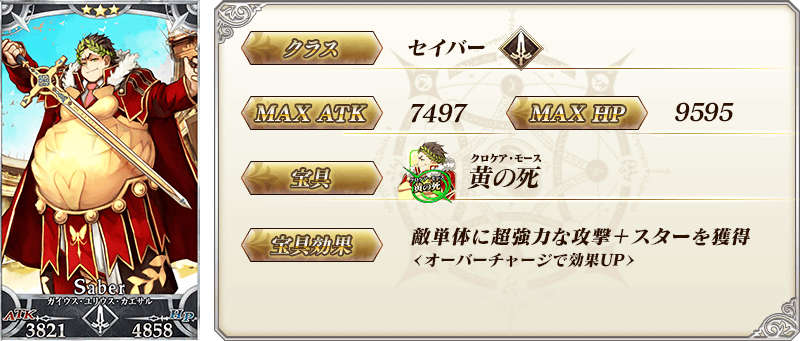
※上述「★3(R)蓋烏斯・尤利烏斯・凱撒」的卡面為靈基再臨第2階段。
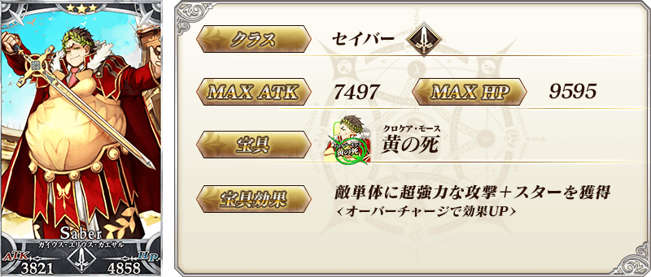
※上述「★3(R)蓋烏斯・尤利烏斯・凱撒」的卡面為靈基再臨第2階段。
 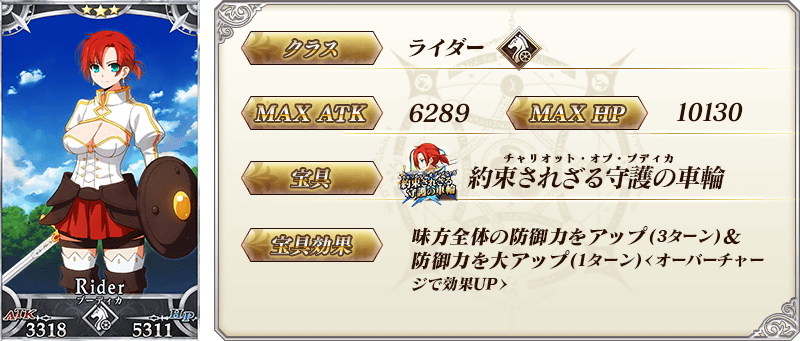
※上述「★3(R)布狄卡」的卡面為靈基再臨第2階段。
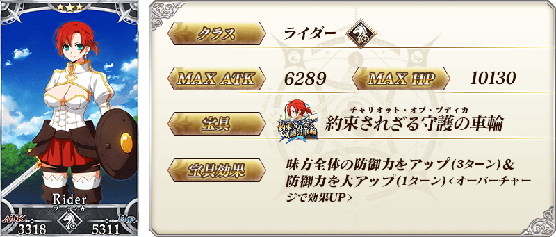
※上述「★3(R)布狄卡」的卡面為靈基再臨第2階段。
 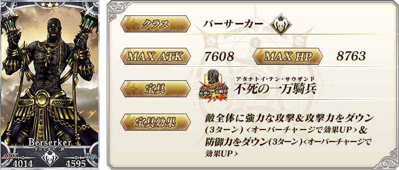
※上述「★3(R)大流士三世」的卡面為靈基再臨第2階段。
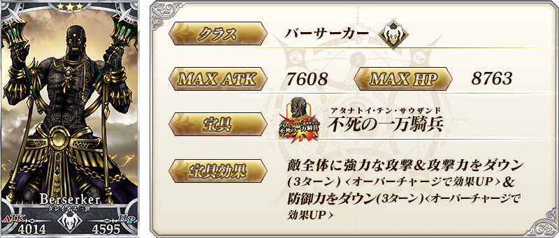
※上述「★3(R)大流士三世」的卡面為靈基再臨第2階段。

| 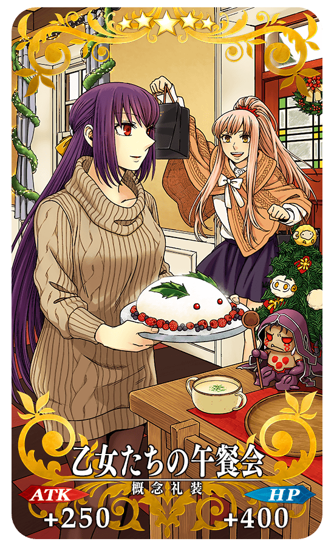 |
★★★★★SSR
|
| 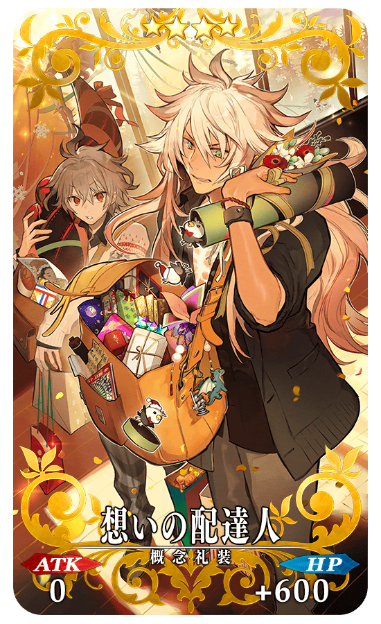 |
★★★★SR
|

| 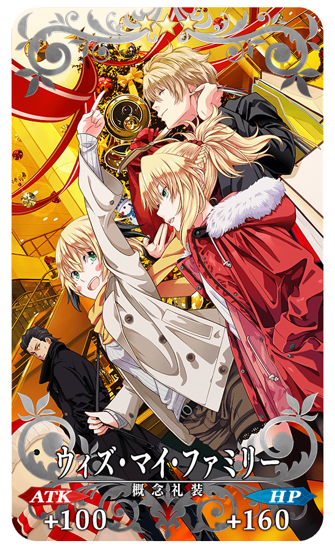 |
★★★R
|


 ※上述「★5(SSR)阿斯托爾福(Saber)」的立繪為靈基再臨第3階段。
※上述「★5(SSR)阿斯托爾福(Saber)」的立繪為靈基再臨第3階段。

 ※上述「★5(SSR)南丁格爾(Berserker)」的立繪為靈基再臨第2階段。
※上述「★5(SSR)南丁格爾(Berserker)」的立繪為靈基再臨第2階段。
【11月28日(四) 19:30追記】
介紹「★5(SSR)阿斯托爾福(Saber)」的寶具演出！
在「Fate/Grand Order」官方網站內的公告中，以影片公開寶具演出，敬請確認。
【11月28日(四) 19:30追記】
介紹「★5(SSR)南丁格爾(Berserker)」「★4(SR)馬嘶」「★4(SR)童謠」的寶具演出！
在「Fate/Grand Order」官方網站內的公告中，以影片公開寶具演出，敬請確認。
其他還有，期間限定活動「聖誕節2019 南丁格爾的聖誕頌」同時舉辦！
關於詳情，請自下述橫幅確認。
■「聖誕節2019 南丁格爾的聖誕頌」詳細情報
 ※11月28日(四) 18:30圖片修正
※11月28日(四) 18:30圖片修正